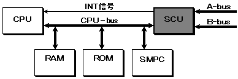

★HARDWARE Manual
★セガサターン概要マニュアル
★HARDWARE Manual
★セガサターン概要マニュアル
図3.1 SCUシステム構成

| No | 項 目 | 仕 様 | 備 考 |
|---|---|---|---|
| 1 | DSP | ・32bit×32bit → 48bit | |
| 2 | DMA | ・CPU用3ch,DSP用1ch | |
| 4 | 割り込み制御 | ・画面に同期するタイマ（2ch）および、 | |
| 5 | A-bus制御 | ・A-bus（外部バス）のバスサイジング | |
| 6 | B-bus制御 | ・B-bus（内部バス）の制御 | ・VDP1、VDP2、SCSP専用 |
| 画面表示モード | SH-2動作クロック | SCU-DSP動作クロック |
|---|---|---|
320 ドットモード時（NTSC方式） | 26.8741 MHz | 13.4371 MHz |
352 ドットモード時（NTSC方式） | 28.6364 MHz | 14.3182 MHz |
320 ドットモード時（PAL方式） | 26.6877 MHz | 13.3439 MHz |
352 ドットモード時（PAL方式） | 28.4377 MHz | 14.2189 MHz |
★HARDWARE Manual
★セガサターン概要マニュアル